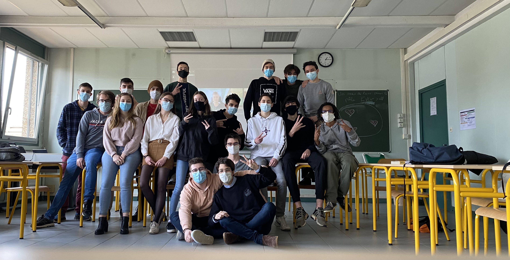
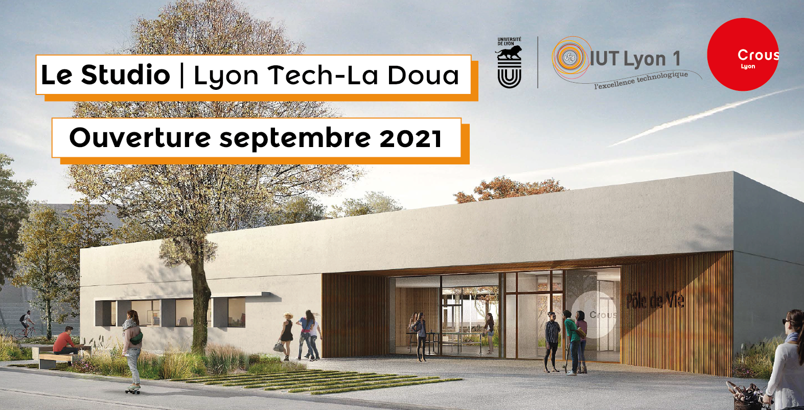
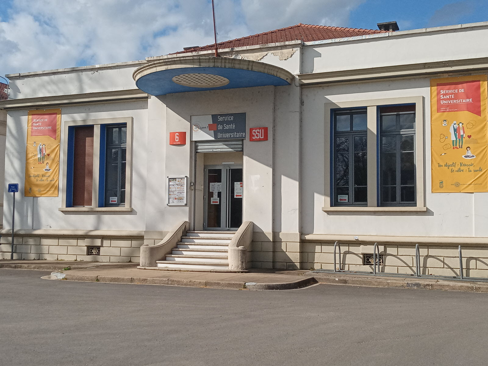
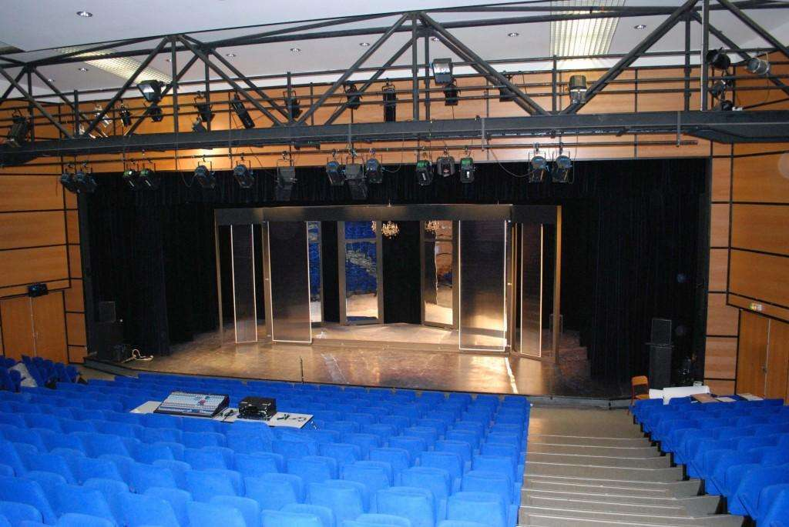
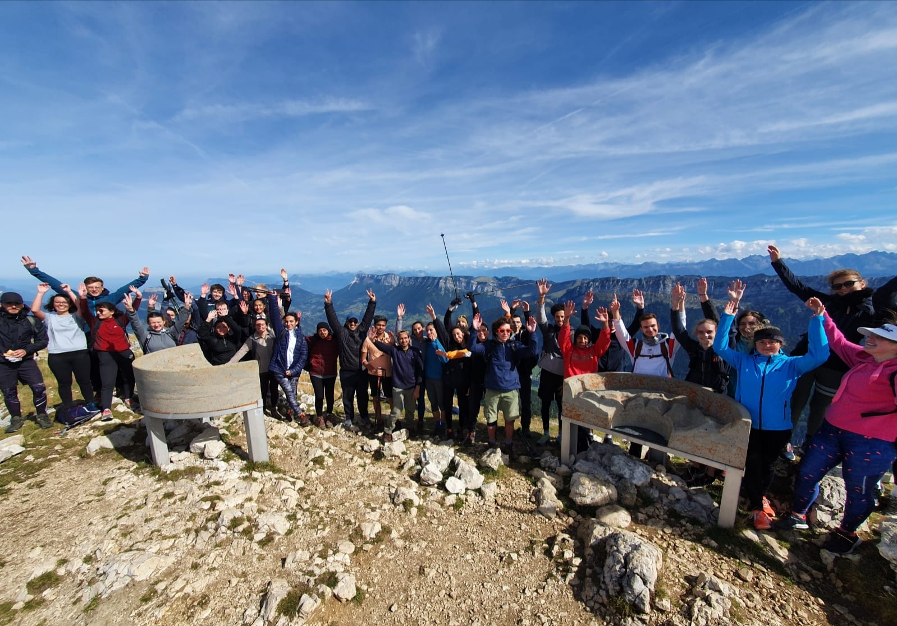

Le Campus
Le bureau des étudiants
Le bureau des étudiants (aussi appelé BDE) du BUT informatique de Lyon 1 est composé d’étudiants bénévole et a pour vocation d’animer la vie étudiante en proposant différentes activités, événements… mais ce n’est pas tout, le BDE possède aussi son propre local qui est équipé de distributeurs automatiques, de canapés et de tables. Les étudiants du département, s’y retrouve ainsi pour discuter, passer du bon temps. Le BDE possède son propre serveur discord afin d’organiser des événements jeux vidéos, sortis, restaurants, soirée étudiante. Il sont aussi la en cas de problème, vous pourrez y trouver de l’aide en cas de soucis dans votre vie d’étudiant. Le BDE est un élément clé dans la vie sur le campus.
Les restaurants universitaires et cafétarias
Plusieurs restaurant universitaire et cafétéria son à votre disposition sur le campus, celle-ci sont ouverte à partir de 7h afin de permettre aux étudiant de prendre leur petit déjeuner. Le midi pour un menu, le prix est de 3.20€ et pour les étudiants boursier il est a 1€. Les restaurants universitaires et cafétarias propose un large choix de nourriture et boissons. De plus une cafétaria se nommant le studio a ouvert ses portes en 2021 a 1 minute de marche de l’IUT.
pour plus d'information rendez-vous sur :
Le CROUS Lyon Études a l’étranger
L’un des atouts du BUT informatique de Lyon 1 est qu’il propose d’effectuer son semestre ou son stage de fin de formation à l’étranger. Le Service IMI vous proposes des parcours de formation à l’étranger où vous serez accompagné aussi bien sur le plan pédagogique que financier. Vous aurez un enseignent référent qui vous aideras dans vos choix de formation a l’étranger. Vous pourrez aussi bénéficiez d’aides pour l’élaboration de votre dossier : bourses de mobilité, cours de langues pour préparer votre mobilité, etc. Chaque année, c’est plus de 20 % des étudiants de l’IUT qui choisissent de partir à l'étranger. Cette expérience a l’étranger est soutenue financièrement par différentes bourses : Explor’a de la Région Rhône-Alpes, CROUS pour les boursiers d'état, Erasmus, etc...
Vous souhaitez étudier a l'étranger ?
contacter le service IMI,
Ingénierie Mobilité Internationale de l'IUT LYON 1 a l'adresse suivante :

Le services de santé universitaire
Sur le campus vous avez a votre disposition le Service de santé universitaire (SSU) qui vous permets d’entrer en contact avec des médecins, infirmiers, psychologues. L’objectif du SSU est d’assurer la prévention, la promotion de la santé et le soin (par le biais de consultations) des étudiants.
Pour plus d'information rendez-vous sur :
Le site du service de santé universitaire Le Théâtre Astrée
Le campus de la Doua a la chance de posséder son propre théâtre, le théâtre Astrée. Celui-ci vous proposes certaine pièces de théâtre gratuite pour les étudiant du campus, mais aussi des pièces de théâtre de payante. Le Théâtre Astrée sert aussi de lieu de conférence, on y retrouve aussi des concerts. En juin s’organise aussi les astrées gaming séries, sur trois jours vont avoir lieu des tournois de jeux vidéo, des spectacles autour des arts numérique…
Pour plus d'information rendez-vous sur :
Théâtre Astrée Sports et langues
La pratique sportive universitaire est ouverte à tous les étudiants de Lyon1. Elle est organisée par le Service Universitaire des Activités Physiques et Sportives (SUAPS). Le SUAPS propose différente activités sportive, adapté aux différents niveau, afin que tout les étudiants prenne du plaisir à faire du sport. L’IUT propose aussi des option de langue, sur des heures en dehors des cours. Le sport et les langues peuvent faire l’objet d’une bonification, puisque celle si peuvent rajouté jusqu’à 0,5 point dans la moyenne.
Si vous souhaitez vous inscrire ou plus d'informations rendez-vous sur :
SUAPS Lyon 1 